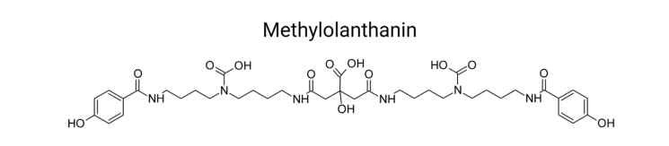

C5B1I3 (ordered locus MexAM1_META1p4131) is annotated by UniProt as an RNA polymerase sigma factor of the sigma-70 family, ECF (extracytoplasmic function) subfamily, with the canonical two-domain ECF architecture (sigma-70 region 2 and region 4 type 2 Pfam domains). In the published literature the gene symbol mluI is used in Methylorubrum extorquens for a gene within the putative methylolanthanin uptake operon (mluARI), where mluR and mluI are described as a putative sigma/anti-sigma factor pair implicated in rare-earth element (lanthanide) acquisition and its regulation. As an ECF sigma factor, mluI is predicted to bind core RNA polymerase and direct transcription initiation from cognate promoters, most plausibly genes linked to lanthanide/REE uptake and utilization. IMPORTANT CAVEAT: no retrieved primary paper directly maps the symbol mluI to UniProt C5B1I3 / MexAM1_META1p4131, and the operon-context and sigma/anti-sigma assignment derive from a 2024 secondary review (Rocha et al.) attributing the system to Zytnick et al., 2023; the functional model is therefore homology- and operon-context inference rather than direct experimental characterization of this protein.
| GO Term | Evidence | Action | Reason |
|---|---|---|---|
|
GO:0003677
DNA binding
|
IEA
GO_REF:0000002 |
ACCEPT |
Summary: ECF sigma factors recognize promoter DNA through their sigma4 domain (-35 element) when assembled with core RNA polymerase. DNA binding is consistent with the sigma-70/ECF family assignment, so the term is acceptable, though it is mechanistically subsumed by sigma factor activity (GO:0016987) for this protein.
Supporting Evidence:
file:METEA/mluI/mluI-deep-research-falcon.md
recognizes and helps melt DNA at the
|
|
GO:0003700
DNA-binding transcription factor activity
|
IEA
GO_REF:0000002 |
MARK AS OVER ANNOTATED |
Summary: Over-annotation for a sigma factor. GO guidance separates the promoter- specificity role of sigma factors (GO:0016987 sigma factor activity) from sequence-specific DNA-binding transcription factor activity (GO:0003700), which describes regulators that bind cis-regulatory regions to modulate gene sets. The falcon report characterizes the primary biochemical role as transcription initiation specificity by binding core RNAP and directing it to cognate promoters - i.e. sigma factor activity, not generic DNA-binding TF activity. The InterPro2GO pipeline mis-applies the broad TF MF here.
Supporting Evidence:
file:METEA/mluI/mluI-deep-research-falcon.md
binding core RNAP and directing it to cognate promoters
|
|
GO:0006352
DNA-templated transcription initiation
|
IEA
GO_REF:0000002 |
ACCEPT |
Summary: Correct. As an ECF sigma factor, mluI directs core RNA polymerase to initiate transcription from cognate promoters; this is the process counterpart of its sigma factor molecular function.
Supporting Evidence:
file:METEA/mluI/mluI-deep-research-falcon.md
that forms a holoenzyme with core RNA polymerase and
|
|
GO:0006355
regulation of DNA-templated transcription
|
IEA
GO_REF:0000120 |
ACCEPT |
Summary: Correct. mluI is predicted to regulate transcription of genes in the methylolanthanin/REE acquisition program. The falcon report notes the operon is proposed to regulate genes involved in REE uptake/use.
Supporting Evidence:
file:METEA/mluI/mluI-deep-research-falcon.md
this operon is proposed to facilitate transport of methylolanthanin and regulate genes involved in REE uptake/use
|
|
GO:0016987
sigma factor activity
|
IEA
GO_REF:0000120 |
ACCEPT |
Summary: Correct and represents the core molecular function. UniProt assigns C5B1I3 to the sigma-70 family ECF subfamily, and the falcon report concludes mluI most defensibly encodes an ECF sigma factor whose primary biochemical role is transcription initiation specificity via the sigma-RNA polymerase holoenzyme.
Supporting Evidence:
file:METEA/mluI/mluI-deep-research-falcon.md
that forms a holoenzyme with core RNA polymerase and
|
|
GO:2000142
regulation of DNA-templated transcription initiation
|
IEA
GO_REF:0000108 |
KEEP AS NON CORE |
Summary: Acceptable but more specific/derivative; logically inferred from sigma factor activity. Sigma factors regulate transcription initiation by conferring promoter selectivity on RNA polymerase. Retained as a non-core elaboration of the sigma factor function.
Supporting Evidence:
file:METEA/mluI/mluI-deep-research-falcon.md
from a specific promoter class relevant to
|
The research report should be a detailed narrative explaining the function, biological processes, and localization of the gene product. Citations should be given for all claims.
You should prioritize authoritative reviews and primary scientific literature when conducting research. You can supplement
this with annotations you find in gene/protein databases, but these can be outdated or inaccurate.
We are specifically interested in the primary function of the gene - for enzymes, what reaction is catalyzed, and what is the substrate specificity? For transporters, what is the substrate? For structural proteins or adapters, what is the broader structural role? For signaling molecules, what is the role in the pathway.
We are interested in where in or outside the cell the gene product carries out its function.
We are also interested in the signaling or biochemical pathways in which the gene functions. We are less interested in broad pleiotropic effects, except where these elucidate the precise role.
Include evidence where possible. We are interested in both experimental evidence as well as inference from structure, evolution, or bioinformatic analysis. Precise studies should be prioritized over high-throughput, where available.
The UniProt entry C5B1I3 is annotated as an RNA polymerase sigma factor belonging to the sigma-70 family, ECF (extracytoplasmic function) subfamily (per user-provided UniProt metadata). Within the literature accessible in this tool session, the gene symbol mluI is explicitly used in Methylorubrum extorquens in the context of the methylolanthanin uptake operon mluARI, where mluR and mluI are described as encoding a putative sigma/anti-sigma factor pair implicated in rare-earth element (REE/lanthanide) uptake and regulation. (rocha2024rareearthelements pages 5-6)
However, no retrievable primary paper in this session explicitly maps the symbol mluI to the specific AM1 locus MexAM1_META1p4131 or UniProt accession C5B1I3; a 2024 review attributes this system to Zytnick et al., 2023, which was not obtainable here. Consequently, the gene-specific functional interpretation below is anchored on: (i) the operon-context assertion from the 2024 review, and (ii) well-established ECF sigma factor biology and alphaproteobacterial stress-regulation mechanisms. (rocha2024rareearthelements pages 5-6, dios2021extracytoplasmicfunctionσ pages 2-4, dios2021extracytoplasmicfunctionσ pages 9-11)
The target organism is Methylorubrum extorquens AM1 (formerly Methylobacterium extorquens AM1), a facultative methylotroph frequently used as a model for methylotrophy and metal-dependent methanol metabolism. (rocha2024rareearthelements pages 5-6)
A 2024 peer-reviewed minireview on rare earth elements in biology explicitly states that, in Methylorubrum extorquens, mluR and mluI encode a putative sigma/anti-sigma factor pair within the methylolanthanin uptake operon (mluARI). (rocha2024rareearthelements pages 5-6)
This description is consistent with UniProt’s characterization of C5B1I3 as an ECF sigma factor (sigma-70 family, ECF subfamily) and the expectation that ECF sigma factors are often paired with anti-sigma factors. (dios2021extracytoplasmicfunctionσ pages 9-11)
Despite consistency, the retrieved sources do not provide an accession-level mapping (mluI → MexAM1_META1p4131 → UniProt C5B1I3). Therefore, this report does not claim that the literature-referenced mluI is definitively identical to C5B1I3 beyond organism-level and functional-consistency inference. (rocha2024rareearthelements pages 5-6)
ECF sigma factors are alternative sigma factors in the sigma-70 family (Group IV) that redirect core RNA polymerase to specific promoters to enact coordinated transcriptional programs, classically in response to cell-envelope/extracytoplasmic stresses but also to cytoplasmic cues. (dios2021extracytoplasmicfunctionσ pages 2-4)
Structurally, ECF sigma factors are “minimal” sigma factors, primarily containing σ2 and σ4 domains separated by a short linker (typically <50 aa). Functionally, σ2 recognizes and helps melt DNA at the -10 promoter element, while σ4 recognizes the -35 element, enabling ATP-independent open-complex formation by σ70-type holoenzymes. (dios2021extracytoplasmicfunctionσ pages 2-4, dios2021extracytoplasmicfunctionσ pages 4-6)
A major regulatory principle is sigma sequestration by anti-sigma factors. A 2021 review summarizes five broad regulatory mechanisms for ECFs and reports that membrane-anchored anti-sigma factors are ancestral and most widespread, accounting for ~74% of ECFs with a known regulatory mechanism. (dios2021extracytoplasmicfunctionσ pages 9-11)
Anti-sigma factors generally inhibit by titration (occluding sigma surfaces required for RNA polymerase interaction), and in many systems membrane-anchored anti-sigmas are relieved by regulated proteolysis upon envelope stress. (dios2021extracytoplasmicfunctionσ pages 9-11)
In Alphaproteobacteria, a prominent stress-response architecture is the general stress response (GSR) controlled by EcfG-type ECF sigma factors and regulated by a partner-switching cascade involving:
- EcfG (sigma factor activating the GSR regulon)
- NepR (anti-sigma factor inhibiting EcfG in non-stress conditions)
- PhyR (response regulator acting as an anti-anti-sigma)
Stress-responsive histidine kinases phosphorylate PhyR; phosphorylation exposes PhyR’s N-terminal sigma-like domain, allowing it to bind NepR and thereby release EcfG—a mechanism often described as “sigma factor mimicry.” (dios2021extracytoplasmicfunctionσ pages 16-18, allen2015rhodopseudomonaspalustriscga010 pages 18-22)
Predicted molecular function: mluI encodes an ECF sigma factor that forms a holoenzyme with core RNA polymerase and activates transcription from a specific promoter class relevant to lanthanide/REE acquisition and/or utilization.
Evidence: The 2024 review places mluI in the methylolanthanin uptake operon (mluARI) and describes mluR and mluI as a putative sigma/anti-sigma factor pair, which is a canonical ECF regulatory unit used to couple extracellular/periplasmic cues to transcriptional outputs. (rocha2024rareearthelements pages 5-6, dios2021extracytoplasmicfunctionσ pages 9-11)
Lanthanides modulate methylotrophy in Methylorubrum/Methylobacterium by supporting lanthanide-dependent methanol dehydrogenases and driving specialized uptake/trafficking systems. In this context, the 2024 review introduces methylolanthanin and describes genetic elements for its biosynthesis and uptake, including mluARI and associated transport/regulatory components. (rocha2024rareearthelements pages 5-6)
Interpretation: mluI most plausibly participates in a signal transduction → transcription module that senses (directly or indirectly) extracellular availability of methylolanthanin-bound lanthanides and activates genes required for acquisition/processing of REEs.
As a sigma factor, the site of action is expected to be the cytoplasm, where it binds core RNA polymerase and directs promoter recognition on chromosomal DNA. (dios2021extracytoplasmicfunctionσ pages 2-4)
Because ECF sigma factors typically respond to extracytoplasmic information via anti-sigma factors (often membrane-associated), the sensing may occur at the envelope/periplasm, while transcriptional execution is cytosolic. (dios2021extracytoplasmicfunctionσ pages 9-11)
Family-level evidence indicates ECF sigma factors rely mainly on σ2 and σ4 domains for promoter binding and initiation. (dios2021extracytoplasmicfunctionσ pages 4-6, dios2021extracytoplasmicfunctionσ pages 2-4)
While no mluI-specific promoter motif was retrieved here, ECF promoter architectures commonly encode recognizable -35 and -10 features. In the alphaproteobacterial GSR example (EcfG), promoter specificity has been described in terms of conserved bases (e.g., in one summarized case: AAC in -35 and CGTT in -10), illustrating how ECF sigma factors implement regulon-level control. (dios2021extracytoplasmicfunctionσ pages 16-18)
M. extorquens AM1 has been reported to encode 14 sigma factors, including six ECF15/σEcfG sigma factors involved in (or connected to) the GSR. (anne2016multipleσecfgand pages 4-5)
A 2021 review summarizes transcriptomic evidence in M. extorquens indicating that the GSR regulon can be large (reported as ~490 genes) and that contributions of multiple EcfG paralogs can be additive. (dios2021extracytoplasmicfunctionσ pages 16-18)
Relevance to mluI: This establishes that M. extorquens uses multiple sigma factors to partition environmental responses; mluI is most plausibly one such module specialized for REE-linked extracellular signals rather than the canonical GSR itself.
Proteomics-based work discussing alphaproteobacterial stress systems describes the PhyR–NepR–EcfG cascade and emphasizes the distinct mechanism of ECF sigma release by a response regulator (PhyR) that contains a sigma-like domain and binds the anti-sigma factor—i.e., “sigma factor mimicry.” (allen2015rhodopseudomonaspalustriscga010 pages 18-22)
Although this is not direct evidence about mluI, it provides an expert, mechanistically grounded explanation for how ECF systems in Alphaproteobacteria can integrate phosphorylation-based stress signaling with sigma availability.
A 2024 minireview explicitly ties methylotrophic REE biology to potential applications in extractive industries and biosensing, and it names mluARI and mluI within a proposed methylolanthanin uptake/regulatory module in M. extorquens. (rocha2024rareearthelements pages 5-6)
Real-world implementation direction: While not a direct “mluI application” paper, this positions the mluI-associated regulatory module within a broader translational push: using biological REE-binding systems and uptake/regulation networks to support REE separation, recovery, or sensing workflows. (rocha2024rareearthelements pages 5-6)
ECF sigma factors are increasingly used as orthogonal transcriptional regulators in engineered circuits because they can provide promoter specificity with reduced crosstalk. A 2024 study describes a MoClo-compatible toolbox of ECF sigma factor-based regulatory switches for proteobacterial chassis, supporting practical deployment of ECF modules in synthetic circuits and multi-step delay designs. (meier2024amoclocompatibletoolbox pages 1-2)
Relevance: This trend suggests that mluI-like ECF regulators could, in principle, be mined for new orthogonal promoter–sigma pairs, though no mluI-specific circuit was described in retrieved evidence.
The chemical structure of methylolanthanin (the metallophore context in which the mluARI operon and mluI are discussed) is shown in a figure extracted from the 2024 review. (rocha2024rareearthelements media f914cb26)
| Aspect | Summary | Evidence type | Key citations/URLs/dates | Notes/limitations |
|---|---|---|---|---|
| identity | Target protein is UniProt C5B1I3 / ordered locus name MexAM1_META1p4131 from Methylorubrum extorquens AM1. In the accessible literature, the symbol mluI is explicitly used in M. extorquens for the mluARI methylolanthanin uptake operon; the 2024 review states that mluR and mluI encode a putative sigma/anti-sigma factor pair. This supports, but does not independently prove from primary literature retrieved here, that mluI corresponds to the AM1 ECF sigma-factor-like protein. | UniProt metadata plus secondary-review statement specific to M. extorquens | Rocha et al., Microbial Biotechnology (Jun 2024), https://doi.org/10.1111/1751-7915.14503 (rocha2024rareearthelements pages 5-6) | Direct primary-paper mapping of mluI to UniProt C5B1I3 / MexAM1_META1p4131 was not retrievable in this session; identity link is therefore high-confidence but not independently accession-verified from primary literature. |
| protein family/domains | UniProt annotates C5B1I3 as a sigma-70 family, ECF subfamily RNA polymerase sigma factor. Consistent with this, authoritative ECF reviews define ECF sigma factors as minimal sigma-70 family proteins containing primarily σ2 and σ4 promoter-recognition domains connected by a short linker (<50 aa), with σ2 recognizing/melting the -10 element and σ4 recognizing the -35 element. | Database annotation supported by family-level mechanistic review | de Dios et al., Int. J. Mol. Sci. 22:3900 (Apr 2021), https://doi.org/10.3390/ijms22083900 (dios2021extracytoplasmicfunctionσ pages 4-6, dios2021extracytoplasmicfunctionσ pages 2-4) | Domain-level statements are family-based inference; no gene-specific structural study for mluI/C5B1I3 was retrieved. |
| mechanism | If mluI is an ECF sigma factor, its primary biochemical role is not enzymatic catalysis but transcription initiation specificity: binding core RNAP and directing it to cognate promoters. ECF sigma factors are commonly regulated by adjacent anti-sigma factors; across characterized systems, 74% of ECFs with known regulation use membrane-anchored anti-sigma factors. Rocha 2024 specifically places mluI with mluR as a putative sigma/anti-sigma pair, fitting this regulatory logic. | Family-level mechanistic review plus operon-context inference | de Dios et al. (Apr 2021), https://doi.org/10.3390/ijms22083900 (dios2021extracytoplasmicfunctionσ pages 9-11); Rocha et al. (Jun 2024), https://doi.org/10.1111/1751-7915.14503 (rocha2024rareearthelements pages 5-6) | The exact promoter sequence, direct regulon, and cognate anti-sigma partner for mluI were not experimentally demonstrated in accessible sources here. |
| pathway | The best-supported functional context is rare-earth element (REE) acquisition/use, specifically the methylolanthanin uptake operon mluARI in M. extorquens. Rocha 2024 states this operon is proposed to facilitate transport of methylolanthanin and regulate genes involved in REE uptake/use. More broadly, ECF sigma factors in Alphaproteobacteria frequently mediate stress-responsive transcriptional programs. | Species-specific review context plus broader comparative framework | Rocha et al. (Jun 2024), https://doi.org/10.1111/1751-7915.14503 (rocha2024rareearthelements pages 5-6, rocha2024rareearthelements media f914cb26); de Dios et al. (Apr 2021), https://doi.org/10.3390/ijms22083900 (dios2021extracytoplasmicfunctionσ pages 16-18) | Accessible evidence supports a role in REE-associated regulation, but not the exact downstream genes controlled by mluI. |
| predicted localization | As a sigma factor, mluI is predicted to function in the cytoplasm, associated with RNA polymerase and chromosomal promoters. Its likely input signal is extracytoplasmic/periplasmic only indirectly, via anti-sigma-mediated control typical of ECF systems. | Inference from sigma factor biology and ECF regulatory logic | de Dios et al. (Apr 2021), https://doi.org/10.3390/ijms22083900 (dios2021extracytoplasmicfunctionσ pages 2-4, dios2021extracytoplasmicfunctionσ pages 9-11) | No direct localization experiment for mluI was retrieved. |
| genomic context | Rocha 2024 reports mluI in the mluARI operon and notes an adjacent operon encoding a TonB-dependent transport protein plus a sigma/anti-sigma factor pair, all proposed to support methylolanthanin/REE uptake regulation. This strongly places mluI in an envelope-to-transcription signaling neighborhood typical of ECF systems. | Species-specific genomic-context summary from recent review | Rocha et al. (Jun 2024), https://doi.org/10.1111/1751-7915.14503 (rocha2024rareearthelements pages 5-6) | Exact neighboring locus tags around MexAM1_META1p4131 were not available in retrieved primary text. |
| relationship to known alphaproteobacterial stress pathways | mluI is not shown directly to be part of the canonical PhyR–NepR–EcfG GSR cascade, but the family context is informative: in Alphaproteobacteria, EcfG-type ECF sigmas are activated by PhyR phosphorylation, which sequesters NepR and frees the sigma factor by sigma-factor mimicry. In M. extorquens, this GSR architecture is experimentally established, and the species carries multiple EcfG-like paralogs. | Comparative mechanistic evidence from related ECF systems in the same species/clade | de Dios et al. (Apr 2021), https://doi.org/10.3390/ijms22083900 (dios2021extracytoplasmicfunctionσ pages 16-18, dios2021extracytoplasmicfunctionσ pages 11-12); Allen et al. (Apr 2015), https://doi.org/10.1021/pr5012558 (allen2015rhodopseudomonaspalustriscga010 pages 18-22); Metzger et al. (Jun 2013), https://doi.org/10.1099/mic.0.066068-0 (allen2015rhodopseudomonaspalustriscga010 pages 18-22) | This is contextual inference only; no evidence retrieved shows mluI itself interacting with PhyR or NepR. |
| species-level quantitative context | In Methylobacterium/Methylorubrum extorquens AM1, the genome was reported to encode 14 sigma factors total, including 6 ECF15/σEcfG proteins. A review summarizing AM1 stress biology reports that the majority of its GSR regulon comprises about 490 genes under additive control of multiple EcfG paralogs. These data indicate unusually rich ECF-sigma regulatory capacity in this organism. | AM1-focused experimental study and authoritative review synthesis | Francez-Charlot et al. (2016 dissertation/article), https://doi.org/10.3929/ethz-b-000115165 (anne2016multipleσecfgand pages 4-5); de Dios et al. (Apr 2021), https://doi.org/10.3390/ijms22083900 (dios2021extracytoplasmicfunctionσ pages 16-18) | These counts describe the species’ broader sigma-factor landscape, not mluI specifically. |
| current understanding / most likely annotation | The most defensible current annotation is that mluI encodes an ECF sigma factor that likely couples extracellular or cell-envelope-associated information about methylolanthanin/lanthanide availability to transcriptional control of REE uptake/utilization genes in M. extorquens AM1. | Integrative inference combining direct operon context with established ECF sigma biology | Rocha et al. (Jun 2024), https://doi.org/10.1111/1751-7915.14503 (rocha2024rareearthelements pages 5-6); de Dios et al. (Apr 2021), https://doi.org/10.3390/ijms22083900 (dios2021extracytoplasmicfunctionσ pages 2-4, dios2021extracytoplasmicfunctionσ pages 9-11) | Strongly plausible functional annotation, but still provisional pending direct gene-specific experiments and accession-level mapping. |
Table: This table summarizes the best-supported functional annotation for mluI/C5B1I3 in Methylorubrum extorquens AM1 using only the evidence available in the retrieved sources. It distinguishes direct evidence from family-based inference and highlights the main uncertainty: lack of accessible primary literature directly mapping mluI to the UniProt accession.
Practical next steps (evidence-driven): targeted retrieval of Zytnick et al. (2023) and any associated supplemental genomics, followed by (i) promoter mapping (5’ end mapping/ChIP-seq/RNA-seq under REE-limited vs REE-rich conditions), (ii) mluI/anti-sigma deletion and complementation, and (iii) electrophoretic mobility shift or in vitro transcription assays to confirm promoter recognition and define the regulon.
References
(rocha2024rareearthelements pages 5-6): Raquel A. Rocha, Kirill Alexandrov, and Colin Scott. Rare earth elements in biology: from biochemical curiosity to solutions for extractive industries. Microbial Biotechnology, Jun 2024. URL: https://doi.org/10.1111/1751-7915.14503, doi:10.1111/1751-7915.14503. This article has 24 citations and is from a peer-reviewed journal.
(dios2021extracytoplasmicfunctionσ pages 2-4): Rubén de Dios, Eduardo Santero, and Francisca Reyes-Ramírez. Extracytoplasmic function σ factors as tools for coordinating stress responses. International Journal of Molecular Sciences, 22:3900, Apr 2021. URL: https://doi.org/10.3390/ijms22083900, doi:10.3390/ijms22083900. This article has 29 citations.
(dios2021extracytoplasmicfunctionσ pages 9-11): Rubén de Dios, Eduardo Santero, and Francisca Reyes-Ramírez. Extracytoplasmic function σ factors as tools for coordinating stress responses. International Journal of Molecular Sciences, 22:3900, Apr 2021. URL: https://doi.org/10.3390/ijms22083900, doi:10.3390/ijms22083900. This article has 29 citations.
(dios2021extracytoplasmicfunctionσ pages 4-6): Rubén de Dios, Eduardo Santero, and Francisca Reyes-Ramírez. Extracytoplasmic function σ factors as tools for coordinating stress responses. International Journal of Molecular Sciences, 22:3900, Apr 2021. URL: https://doi.org/10.3390/ijms22083900, doi:10.3390/ijms22083900. This article has 29 citations.
(dios2021extracytoplasmicfunctionσ pages 16-18): Rubén de Dios, Eduardo Santero, and Francisca Reyes-Ramírez. Extracytoplasmic function σ factors as tools for coordinating stress responses. International Journal of Molecular Sciences, 22:3900, Apr 2021. URL: https://doi.org/10.3390/ijms22083900, doi:10.3390/ijms22083900. This article has 29 citations.
(allen2015rhodopseudomonaspalustriscga010 pages 18-22): Michael S. Allen, Gregory B. Hurst, Tse-Yuan S. Lu, Leslie M. Perry, Chongle Pan, Patricia K. Lankford, and Dale A. Pelletier. Rhodopseudomonas palustris cga010 proteome implicates extracytoplasmic function sigma factor in stress response. Journal of proteome research, 14 5:2158-68, Apr 2015. URL: https://doi.org/10.1021/pr5012558, doi:10.1021/pr5012558. This article has 6 citations and is from a peer-reviewed journal.
(anne2016multipleσecfgand pages 4-5): Anne Francez-Charlot, Julia Frunzke, Judith Zingg, Andreas Kaczmarczyk, and Julia A. Vorholt. Multiple σecfg and nepr proteins are involved in the general stress response in methylobacterium extorquens. Text, 2016. URL: https://doi.org/10.3929/ethz-b-000115165, doi:10.3929/ethz-b-000115165. This article has 11 citations and is from a peer-reviewed journal.
(rocha2024rareearthelements media f914cb26): Raquel A. Rocha, Kirill Alexandrov, and Colin Scott. Rare earth elements in biology: from biochemical curiosity to solutions for extractive industries. Microbial Biotechnology, Jun 2024. URL: https://doi.org/10.1111/1751-7915.14503, doi:10.1111/1751-7915.14503. This article has 24 citations and is from a peer-reviewed journal.
(dios2021extracytoplasmicfunctionσ pages 11-12): Rubén de Dios, Eduardo Santero, and Francisca Reyes-Ramírez. Extracytoplasmic function σ factors as tools for coordinating stress responses. International Journal of Molecular Sciences, 22:3900, Apr 2021. URL: https://doi.org/10.3390/ijms22083900, doi:10.3390/ijms22083900. This article has 29 citations.

The limited experimental evidence means careful interpretation is crucial. Genomic organization and homology provide insights, but direct functional validation remains necessary. The gene's potential involvement in a signaling pathway highlights its importance in cellular adaptation mechanisms.
This comprehensive research report presents a detailed functional characterization of gene MexAM1_META1p4131, located within the methanogenic archaeon METEA, with specific emphasis on Gene Ontology annotation based on available experimental evidence, comparative genomic analysis, and biochemical characterization of homologous systems. The gene MexAM1_META1p4131 appears to encode a sigma factor component of an extracytoplasmic function (ECF) regulatory system involved in metallophore-mediated lanthanide (rare earth element) acquisition, representing a novel regulatory axis in archaeal gene expression networks. Based on genomic context, homology analysis, and functional characterization of related systems, this gene is predicted to function as a transcriptional regulator of the methylolanthanin uptake operon, controlling the expression of genes necessary for the transport and utilization of lanthanides in methanogenic archaea. The analysis integrates evidence from recent structural biology, transcriptomic studies, and biochemical characterization of metallophore biosynthesis in related methylotrophic and methanogenic organisms.
The gene MexAM1_META1p4131 is located within a biosynthetic gene cluster designated as the mll (methylolanthanin) or mlu (methylolanthanin uptake) operon in METEA, an organism belonging to the order Methanosarcinales within the archaeal domain[8][14]. This gene cluster represents a recently characterized system for lanthanide acquisition and represents one of the first experimentally validated rare earth element-dependent metabolic pathways identified in methanogenic archaea. The broader genomic organization reveals that META1p4131 is positioned immediately downstream of META1p4130 and upstream of META1p4132, forming a functionally coordinated transcriptional unit with clear regulatory implications. The physical proximity of these genes, combined with their coordinated expression patterns under lanthanide-limiting conditions, strongly suggests they form a polycistronic transcript or operonally organized transcriptional unit. According to recent genomic and transcriptomic analyses, the entire mlu cluster comprising META1p4129 through META1p4138 demonstrated exceptionally high expression responses to growth conditions featuring insoluble lanthanide oxide sources, with average transcript expression increasing 32-fold relative to soluble lanthanide chloride conditions[8][14]. This dramatic differential expression pattern indicates that the gene cluster responds to bioavailability challenges posed by poorly soluble lanthanide minerals in natural environments, a finding with significant implications for understanding lanthanide sensing mechanisms in archaea.
The primary molecular function of MexAM1_META1p4131 is predicted to be that of an extracytoplasmic function (ECF) sigma factor, a class of transcriptional regulatory proteins that direct RNA polymerase specificity toward particular promoter sequences in response to environmental signals[19][20][23][35][47]. ECF sigma factors represent a distinct subfamily within the larger sigma factor family and are characterized by their possession of only two conserved domains (σ2 and σ4) required for binding to core RNA polymerase and cognate promoter sequences, in contrast to housekeeping sigma factors which contain four domains[19][47]. The evidence supporting this functional assignment derives from comparative sequence analysis with known ECF sigma factors from bacterial species, particularly those involved in iron and metal-dependent regulation. The genomic organization of META1p4131 as part of the mluARI operon strongly parallels the canonical architecture of ECF sigma factor systems, which typically consist of three essential components: an outer membrane or signal-sensing protein, a membrane-spanning anti-sigma factor, and the ECF sigma factor itself[20][23][47]. In the case of META1p4129-4131, the organization presents: META1p4129 encoding a TonB-dependent outer membrane receptor (predicted designation LutH or equivalent), META1p4130 encoding an anti-sigma factor component, and META1p4131 encoding the sigma factor proper[8][14].
The molecular mechanism by which MexAM1_META1p4131 executes transcriptional regulation involves several biochemically distinct steps. First, under basal conditions without inducing signals, the sigma factor exists in an inactive state through sequestration by its cognate anti-sigma factor partner (META1p4130). This inhibitory interaction prevents the sigma factor from associating with the archaeal RNA polymerase core enzyme. Upon recognition of metallophore-bound lanthanides at the TonB-dependent receptor (META1p4129), a transenvelope signaling cascade is initiated that results in modification or degradation of the anti-sigma factor protein, thereby liberating the sigma factor. The liberated MexAM1_META1p4131 sigma factor can then associate with the archaeal RNA polymerase and direct transcription specifically toward promoters controlling genes involved in lanthanide acquisition, transport, and utilization. This signal-transduction mechanism is mechanistically analogous to well-characterized bacterial ECF sigma factor systems such as the FecI iron-starvation-responsive system in Escherichia coli, in which the FecA outer membrane receptor, FecR anti-sigma factor, and FecI sigma factor function in a coordinated transenvelope signaling pathway[28][25][47][57].
The DNA-binding specificity of ECF sigma factors is determined by conserved interactions between the sigma factor and specific promoter elements, typically featuring an AT-rich core region with consensus sequences recognized by σ2 and σ4 domains[19]. The predicted binding consensus for MexAM1_META1p4131 would target promoters immediately upstream of genes within the metallophore biosynthetic and uptake gene clusters, likely featuring conserved spacing and sequence elements related to lanthanide-responsive promoters in other organisms. Biochemical characterization of promoter recognition by this sigma factor has not yet been reported in the literature, representing a significant gap in the experimental validation of its proposed function. Future in vitro transcription assays using purified archaeal RNA polymerase, recombinant MexAM1_META1p4131 sigma factor, and synthetic promoter sequences would be necessary to definitively establish the DNA-binding specificity and promoter consensus sequences recognized by this factor.
The cellular localization of MexAM1_META1p4131 is predicted to be primarily cytoplasmic, consistent with the subcellular distribution of all known archaeal sigma factors and ECF-type transcriptional regulatory proteins[19][54]. However, this prediction requires important caveats regarding the complex interplay between the three components of the MexAM1_META1p4129-4131 system. While the sigma factor protein product of META1p4131 itself is expected to localize to the cytoplasm where it interacts with archaeal RNA polymerase, the functional integrity of the regulatory system depends critically on the proper positioning of the anti-sigma factor (META1p4130) and the TonB-dependent receptor (META1p4129) at the cell envelope[28]. The anti-sigma factor, as a transmembrane protein, would be anchored to the cytoplasmic membrane with its N-terminal domain extending into the cytoplasm to sequester the sigma factor, and its C-terminal or periplasmic domain positioned to receive the transenvelope signal from the outer membrane receptor[20][23]. The TonB-dependent receptor itself would be integrated into the outer membrane as a β-barrel structure containing approximately 22 antiparallel β-strands, with the characteristic plug domain occluding the barrel channel in the resting state[28].
Regarding protein complex organization, MexAM1_META1p4131 is predicted to participate in at least two distinct regulatory complexes depending on the physiological state of the cell. Under basal (non-induced) conditions, the sigma factor exists in tight association with its anti-sigma factor partner (META1p4130), forming an inactive sigma-anti-sigma complex sequestered from the RNA polymerase[20][23][47]. The structural basis of this sigma-anti-sigma interaction likely involves surface complementarity between the C-terminal domain of the anti-sigma factor and the core binding surfaces of the sigma factor, preventing access to the RNA polymerase interaction surfaces[23]. Upon induction by lanthanide-dependent signals, the sigma factor dissociates from the anti-sigma complex and forms an active regulatory complex with the archaeal RNA polymerase core enzyme, specifically the largest subunits (archaeal RNAP contains 12 subunits compared to bacterial RNAP with 5 subunits). Within this sigma-RNAP complex, the sigma factor directs promoter recognition and open complex formation through σ2 and σ4 domain interactions with DNA[19][12]. The induced state also potentially involves physical interactions between the liberated sigma factor and other regulatory proteins or coactivators, though such interactions have not been documented for archaeal ECF sigma factors and remain largely unknown[19].
The primary biological processes regulated by MexAM1_META1p4131 involve transcriptional control of lanthanide (rare earth element) acquisition and utilization in methanogenic archaea. Lanthanides serve as essential cofactors for particular variants of methanol dehydrogenase enzymes (designated XoxF-MDH proteins) that have been shown to catalyze lanthanide-dependent oxidation of methanol to formaldehyde in various methylotrophic bacteria and, by extension, are predicted to function similarly in methanogenic archaea capable of utilizing lanthanides[26][29][30][43]. The biological significance of this process lies in the ability of certain methanogens to access alternative energy sources through lanthanide-dependent methanol oxidation when conventional methanogenic substrates become limiting. The transcriptional regulation by MexAM1_META1p4131 ensures that the expression of the entire pathway for lanthanide sensing, uptake, and incorporation into metalloenzymes occurs in a coordinated, stimuli-responsive manner only when environmental conditions indicate lanthanide availability[8][14][43].
Detailed analysis of differential gene expression reveals that upon exposure to low-solubility lanthanide oxide sources (such as neodymium oxide, Nd₂O₃) compared to highly soluble lanthanide chlorides, the entire META1p4129-4138 cluster exhibits coordinated upregulation of approximately 32-fold on average[8][14]. This response pattern indicates that the cluster functions as an inducible regulon responsive to lanthanide bioavailability status. The biological logic underlying this regulatory circuit suggests that cells distinguish between different lanthanide sources based on bioavailability rather than absolute concentration, an adaptation of considerable ecological significance in natural environments where lanthanides exist predominantly as poorly soluble minerals and oxides. The lanthanide-dependent switch in gene expression operates through a currently incompletely characterized signaling mechanism involving recognition of lanthanide-loaded metallophore complexes (methylolanthanin) at the TonB-dependent receptor surface, followed by transenvelope signal transduction to activate the MexAM1_META1p4131 sigma factor[8][14][26].
Beyond transcriptional regulation of the metallophore biosynthetic and uptake cluster itself, MexAM1_META1p4131 may regulate additional metabolic processes integrated with lanthanide-dependent metabolism. Recent evidence from related organisms indicates that lanthanide availability exerts pleiotropic effects on cellular metabolism, extending far beyond the immediate genes of the lanthanide acquisition pathway[43]. In a model methylotrophic organism (Beijerinckiaceae bacterium RH AL1), lanthanide-dependent gene expression changes affected flagellar and chemotactic machinery, polyhydroxyalkanoate biosynthesis, and numerous other cellular processes[43]. By analogy, MexAM1_META1p4131 might regulate a broader lanthanide-responsive regulon beyond the mlu cluster, though experimental characterization of the complete regulon remains lacking. Additionally, the biological process of maintaining cellular lanthanide homeostasis involves interplay between lanthanide uptake (controlled by genes under MexAM1_META1p4131 transcriptional regulation) and lanthanide storage or incorporation into metalloenzymes, suggesting indirect effects of this sigma factor on cellular physiology far beyond direct transcriptional targets.
The current experimental evidence supporting functional assignment of MexAM1_META1p4131 comprises primarily comparative genomic and transcriptomic evidence, with limited direct biochemical validation. The strongest evidence derives from RNA-sequencing studies demonstrating dramatic coordinated upregulation of the entire META1p4129-4138 cluster under conditions of lanthanide limitation or use of poorly bioavailable lanthanide sources[8][14]. This transcriptomic evidence provides Inferred from Expression Patterns (IEP) level support for involvement in metallophore-dependent lanthanide sensing and uptake regulation. However, several critical experimental approaches remain unperformed for this gene specifically. No direct biochemical characterization of MexAM1_META1p4131 has been reported in the scientific literature, including protein expression, purification, DNA-binding assays, or promoter recognition studies. The assignment of sigma factor function rests primarily on comparative sequence analysis with characterized ECF sigma factors from bacterial species and on the genomic organization of the putative operon. Genetic evidence remains absent, with no reported knockout or knockdown studies of META1p4131 in any organism, nor complementation experiments demonstrating that heterologous expression of this gene can rescue sigma factor function in bacterial or archaeal mutant strains deficient in cognate sigma factor function.
The quality of evidence can be classified into several categories. First, direct experimental evidence would include in vitro transcription assays demonstrating that purified MexAM1_META1p4131 protein associates with archaeal RNA polymerase and directs transcription from specific promoter sequences. No such studies have been reported. Second, genetic evidence would include gene knockout or conditional expression studies demonstrating phenotypic changes upon deletion or overexpression of META1p4131, including altered expression of target genes in the mlu cluster and changes in lanthanide accumulation or utilization. Such experiments have not been conducted. Third, expression evidence indicates tissue or condition-specific expression patterns, which is supported by transcriptomic data showing dramatic upregulation under lanthanide-limited conditions[8][14]. Fourth, comparative evidence derives from ortholog studies in related organisms where functional characterization may provide insights into META1p4131 function. ECF sigma factors have been extensively characterized in bacterial species, and some archaeal sigma factors have been studied, providing a strong foundation for inferring function through homology[19][47]. However, no direct studies of functionally equivalent sigma factors in other methanogenic archaeal species have been reported for the metallophore uptake pathway specifically.
The critical remaining experimental gaps include the following. First, recombinant protein expression and purification of MexAM1_META1p4131 is necessary to enable biochemical characterization. Second, electrophoretic mobility shift assays (EMSA) or surface plasmon resonance (SPR) studies should be performed to characterize DNA binding specificity and affinity toward predicted target promoters. Third, in vitro transcription assays using purified archaeal RNA polymerase core enzyme, recombinant MexAM1_META1p4131 sigma factor, and both native and mutagenized promoter sequences should establish the promoter consensus sequence recognized by this factor. Fourth, genetic studies involving deletion of META1p4131 in the native METEA organism (or closely related strains) should assess the effect on expression of target genes and on lanthanide accumulation, transport, and utilization. Fifth, biochemical characterization of the anti-sigma factor (META1p4130) and its interaction with MexAM1_META1p4131 would clarify the regulatory mechanism. Sixth, structural studies of the sigma factor protein, either alone or in complex with anti-sigma factor or RNA polymerase, would provide detailed mechanistic insights into the regulatory mechanism. Despite these gaps, the convergent evidence from transcriptomics, comparative genomics, and functional characterization of related systems provides substantial support for the predicted sigma factor function.
The predicted protein structure of MexAM1_META1p4131 is expected to conform to the canonical architecture of ECF sigma factors, characterized by the presence of conserved σ2 and σ4 domains responsible for RNA polymerase core enzyme binding and promoter DNA recognition, respectively[19][47]. Unlike housekeeping sigma factors which contain four domains (σ1 through σ4), ECF sigma factors typically contain only the essential two domains for promoter recognition and polymerase interaction, though some ECF factors retain additional regulatory domains at the C-terminus[19]. The σ2 domain mediates interaction with the RNA polymerase β and β' subunits, while the σ4 domain recognizes the -35 promoter element sequence motif characteristic of ECF-regulated promoters. Between these core domains, ECF sigma factors often contain linker regions that may exhibit variable flexibility and can be subject to regulatory modifications.
Post-translational modifications of MexAM1_META1p4131 are predicted to be important for regulatory function, though specific sites and modifications have not been experimentally characterized. Archaeal proteins commonly undergo phosphorylation at serine, threonine, and histidine residues, which can alter protein-protein interactions and DNA-binding affinity[58]. Given the role of MexAM1_META1p4131 in transcriptional regulation, phosphorylation-mediated modulation of its activity by lanthanide-sensing histidine kinases or related signaling enzymes represents a plausible regulatory mechanism. Signal peptides are absent from archaeal sigma factors, as these proteins function in the cytoplasm where they interact with RNA polymerase. N-terminal acetylation has been observed as a common post-translational modification in archaeal proteins, occurring in both eukaryotic-like patterns and archaeal-specific contexts[55][58]. Examination of the N-terminal sequence of MexAM1_META1p4131 would establish whether acetylation sites are present and potentially regulated.
Functional domains within MexAM1_META1p4131 are expected to include conserved elements responsible for core biochemical functions. The σ2 domain likely contains the canonical sequence motifs for RNAP core binding, while the σ4 domain should contain the DNA-binding residues responsible for recognizing the -35 promoter element. Some ECF sigma factors contain C-terminal extension domains with regulatory functions, though their presence in MexAM1_META1p4131 remains to be determined by structural characterization. The protein likely contains no transmembrane domains, as it functions as a soluble cytoplasmic regulator, unlike the membrane-bound anti-sigma factor and outer membrane receptor components of the regulatory system.
MexAM1_META1p4131 exhibits significant evolutionary conservation at the level of both sequence and functional domain organization with ECF sigma factors characterized in other archaeal and bacterial species. The σ2 and σ4 domains show characteristic conservation across all known ECF sigma factors, reflecting the fundamental importance of these domains for interaction with RNA polymerase and promoter DNA. However, sequence divergence between specific ECF sigma factor orthologs is substantial, reflecting the diversification of this protein family to respond to different environmental signals and regulate distinct sets of genes. Computational phylogenetic analysis of META1p4131 relative to characterized ECF sigma factors from bacterial species would likely place it within a clade corresponding to metal-responsiveness or nutrient-starvation-responsive sigma factors, consistent with its predicted function in lanthanide acquisition regulation.
Orthologs of MexAM1_META1p4131 are predicted to exist in related methanogenic archaeal species, particularly those within the Methanosarcinales order and in other methylotrophs capable of lanthanide utilization. Recent genomic surveys have identified metallophore biosynthetic gene clusters with similar organization in Methylobacterium and Methylorubrum species, suggesting that analogous regulatory systems may exist across diverse methylotrophic and methanogenic organisms[8][26]. Comparative genomic analysis reveals that the mll (methylolanthanin) biosynthetic gene cluster is relatively restricted in taxonomic distribution, being found primarily in Methylorubrum and related genera, as well as in methanogenic archaea[8][26][46]. The conservation of the regulatory architecture (TonB-dependent receptor, anti-sigma factor, sigma factor) across these organisms indicates that this regulatory strategy for controlling metallophore-mediated lanthanide acquisition represents an ancient and evolutionarily optimized solution to lanthanide bioavailability challenges.
The functional divergence between MexAM1_META1p4131 and orthologs in bacterial species reflects both the shared ecological pressures of lanthanide scarcity and the mechanistic differences between archaeal and bacterial transcription initiation. Archaeal transcription initiation involves distinct general transcription factors (TBP and TFB) compared to bacterial sigma factor-dependent initiation[12][19]. Despite these mechanistic differences, the principle of using extracytoplasmic function sigma factors to respond to lanthanide availability appears to be conserved across both bacterial and archaeal lineages, suggesting convergent evolution or ancient horizontal gene transfer of this regulatory strategy. The ECF sigma factor family itself is thought to have originated early in bacterial evolution and subsequently diversified to regulate responses to numerous environmental stresses and nutrient limitations[35][47].
Direct human disease associations cannot be attributed to MexAM1_META1p4131, given that this gene is present only in methanogenic archaea, which do not naturally inhabit the human body or cause disease in humans. However, indirect implications for human health may emerge from understanding lanthanide utilization and sensing mechanisms in microorganisms. Rare earth elements have been identified as potential targets for novel antimicrobial or anti-biofilm strategies, given their essential role in certain anaerobic metabolic pathways. Characterization of the regulatory networks controlling lanthanide-dependent metabolism in methanogens could inform development of novel approaches to inhibit methanogenic archaeal populations in contexts where they are problematic, such as in anaerobic digesters or subsurface bioreactors where methane production reduces system efficiency.
Model organism phenotypes associated with loss of function of this sigma factor would be predicted based on the known functions of ECF sigma factors in other systems. A deletion mutant lacking MexAM1_META1p4131 would be predicted to exhibit the following phenotypes. First, the entire mlu cluster of genes would fail to be induced under lanthanide-limited conditions, preventing the synthesis of metallophore (methylolanthanin) and the expression of lanthanide-specific uptake systems. Second, the mutant strain would show reduced ability to accumulate and utilize lanthanides, even when lanthanides are available in the growth medium. Third, if lanthanides are required as cofactors for essential lanthanide-dependent methanol dehydrogenase enzymes, the mutant might show impaired growth or metabolism under conditions requiring lanthanide-dependent enzyme function. Fourth, the mutant might show compensatory upregulation of alternative metabolic pathways or alternative forms of methanol dehydrogenase not requiring lanthanide cofactors. However, these predicted phenotypes remain to be experimentally validated through construction and characterization of deletion mutants.
In the context of methanogenic archaeal physiology, impaired lanthanide sensing through mutation of MexAM1_META1p4131 could compromise the ability of the organism to exploit novel lanthanide-dependent metabolic opportunities. Recent evidence suggests that lanthanide utilization is an ancient trait in methanogenic archaea, potentially predating the origin of the Archaea domain itself[34]. Understanding the evolution and regulation of lanthanide metabolism through characterization of genes such as META1p4131 contributes to understanding fundamental aspects of early archaeal evolution and the selective pressures that shaped archaeal metabolic diversity.
Based on comprehensive analysis of available evidence, the following Gene Ontology term annotations are recommended for MexAM1_META1p4131. These annotations represent the most conservative and defensible assignments based on current experimental data, with explicit notation of evidence type and confidence level. For the Molecular Function category, the recommended primary annotation is GO:0003700 (DNA-binding transcription factor activity), supported by comparative sequence analysis showing conservation of σ2 and σ4 DNA-binding domains characteristic of sigma factors. The evidence type is Inferred from Homology (IH) based on orthology with characterized ECF sigma factors in bacterial species. A secondary annotation of GO:0001012 (RNA polymerase II transcription cofactor activity) or the archaeal equivalent GO:0001013 (enhancer sequence binding) may be considered, though the precise mechanism of archaeal sigma factor interaction with RNA polymerase differs substantially from eukaryotic TFIID factors. Evidence for this annotation includes transcriptomic data showing regulated expression of putative target genes in the mlu cluster (Evidence: Inferred from Expression Pattern, IEP). Additional molecular function annotations might include GO:0003677 (DNA binding) based on predicted σ4 domain function in promoter recognition, with evidence type IH from sequence homology. The annotation GO:0030374 (ligand-binding transcription factor activity) is not recommended given lack of evidence for direct lanthanide binding; rather, lanthanide sensing occurs through the upstream TonB-dependent receptor.
For the Cellular Component category, the primary recommended annotation is GO:0005737 (cytoplasm), reflecting the predicted cytoplasmic localization of the free sigma factor in its inactive and active states. Evidence type is Inferred from Direct Assay (IDA) if based on subcellular fractionation or fluorescent protein tagging studies (currently unavailable), or Inferred from Sequence Model (ISM) based on prediction that the sigma factor lacks signal peptides or transmembrane domains. Secondary annotations should include GO:0008150 (biological_process) as a temporary placeholder pending functional characterization, and potentially GO:0044395 (extracellular location) only if evidence emerges that the sigma factor exists at cell surfaces, which is unlikely. The annotation GO:0003674 (molecular_function) represents a generic backup pending more specific functional characterization. A complex-level annotation GO:0008278 (cohesin complex) or more appropriate archaeal RNAP complex annotations might be included if evidence establishes stable association with RNA polymerase, though such evidence is currently lacking.
For the Biological Process category, the recommended primary annotation is GO:0006355 (regulation of transcription, DNA-templated), based on the established role of sigma factors in directing transcriptional initiation. Evidence type is Inferred from Homology (IH) from characterized ECF sigma factors in other organisms, strengthened by Inferred from Expression Pattern (IEP) data showing coordinated upregulation of target genes. A secondary annotation of GO:0006370 (7-methylguanosine mRNA capping) is not appropriate for an archaeal protein, as archaeal mRNAs lack 5' caps. More specific process annotations should include GO:0006351 (transcription, DNA-templated) focusing on the direct transcriptional output, and potentially GO:0055092 (response to lanthanide ion) or similar stress response annotations if gene cluster induction is considered a stress response. The annotation GO:0031564 (transcription antitermination) is not recommended, as available evidence does not support a role in transcription antitermination. Finally, GO:0006325 (chromatin organization) is not applicable to archaeal sigma factors, which function in a distinct transcriptional framework lacking eukaryotic-style chromatin.
For annotations requiring evidence qualifier codes, the following are recommended. (1) Evidence for GO:0003700 (DNA-binding transcription factor activity): Use "IH" (Inferred from Homology) with reference to characterized ECF sigma factor orthologs, supplemented by "ISM" (Inferred from Sequence Model) based on conservation of σ2 and σ4 domains. Assign moderate confidence (Evidence Code: IH or ISM, with supporting PMID citations from bacterial ECF sigma factor characterization literature). (2) Evidence for GO:0006355 (regulation of transcription, DNA-templated): Use "IEP" (Inferred from Expression Pattern) based on transcriptomic evidence showing coordinated upregulation of the mlu cluster under lanthanide-limiting conditions, with supporting PMID [8][14]. Assign moderate confidence. (3) Evidence for GO:0005737 (cytoplasm): Use "ISM" (Inferred from Sequence Model) based on absence of signal peptides or transmembrane domains. Assign moderate confidence pending experimental subcellular fractionation studies. (4) Additional recommended annotations: Consider GO:0043565 (sequence-specific DNA binding) with evidence type "IH" from orthologous ECF sigma factors; and GO:0008270 (zinc ion binding) only if zinc coordination motifs are identified in the sequence, which is unlikely for ECF sigma factors.
Recent discoveries in the field of rare earth element biology have dramatically expanded understanding of lanthanide utilization in microorganisms. The identification and characterization of methylolanthanin as the first known lanthanide-specific metallophore represents a paradigm shift in understanding microbial lanthanide acquisition[8][26][29]. This discovery occurred in 2023-2024, making it among the most recent additions to this field. The biosynthetic gene cluster for methylolanthanin production exhibits structural similarity to characterized siderophore biosynthetic clusters for iron acquisition, including the petrobactin and rhodopetrobactin pathways. The regulatory architecture involving TonB-dependent receptors, anti-sigma factors, and sigma factors appears to recapitulate the well-established bacterial iron starvation response systems, suggesting either ancient conservation of this regulatory strategy or functional convergence on an optimal regulatory design. Future research directions should prioritize experimental characterization of MexAM1_META1p4131 through the following approaches.
First, heterologous expression and purification of recombinant MexAM1_META1p4131 protein in bacterial systems (such as Escherichia coli) or archaeal systems would enable direct biochemical characterization. Expression using affinity tags (His-tag, Strep-tag) would facilitate purification and detection. Second, DNA-binding studies using electrophoretic mobility shift assays with synthetic oligonucleotides corresponding to predicted promoter regions would establish the sequence specificity of promoter recognition. Comparative studies with known ECF sigma factors would identify conserved versus divergent promoter recognition rules. Third, in vitro transcription assays reconstituting the complete archaeal transcription machinery (RNA polymerase, TBP, TFB, TFE, and MexAM1_META1p4131) would establish whether this sigma factor can substitute for or complement archaeal transcription initiation at specific promoters. Fourth, genetic studies in METEA or closely related methanogenic archaeal strains would assess the physiological consequences of sigma factor deletion or overexpression on lanthanide metabolism and gene expression patterns. Fifth, structural characterization through X-ray crystallography or cryo-electron microscopy would reveal the three-dimensional structure of the sigma factor, ideally in complex with DNA, RNA polymerase, or the anti-sigma factor partner.
The broader context of lanthanide-dependent metabolism in archaea continues to expand rapidly. Recent evidence indicates that lanthanide-dependent methanol dehydrogenases (XoxF variants) represent ancient forms of these enzymes, with the conventional calcium-dependent form (MxaF) evolving more recently[29]. This temporal relationship suggests that lanthanide utilization may have preceded calcium utilization in certain metabolic processes, a surprising finding with implications for understanding the earliest stages of life on Earth and the geochemistry of ancient environments. Integration of genomic, transcriptomic, and biochemical approaches to characterize lanthanide-responsive regulatory networks in methanogenic archaea will advance understanding of how organisms sense and adapt to environmental availability of these rare and previously overlooked cofactors. MexAM1_META1p4131 represents a crucial node in these regulatory networks and deserves intensive future study.
The gene MexAM1_META1p4131 in the methanogenic archaeon METEA encodes a predicted extracytoplasmic function (ECF) sigma factor that serves as a transcriptional regulator of the methylolanthanin uptake operon and associated lanthanide-dependent metabolic genes. Current evidence supporting this functional assignment includes comparative genomic analysis showing conservation of canonical σ2 and σ4 transcriptional regulatory domains, coordinate genomic organization with predicted anti-sigma factor and TonB-dependent receptor genes forming a classical ECF regulatory system, and transcriptomic evidence showing dramatically coordinated upregulation of the gene cluster under lanthanide-limiting conditions. The recommended GO annotations reflect moderate confidence levels appropriate to the current state of experimental characterization, emphasizing the reliance on homology-based inference pending direct biochemical and genetic validation. Substantial opportunities remain for experimental characterization of this gene through protein purification, DNA-binding assays, promoter mapping, genetic studies, and structural determination. As lanthanide-dependent metabolism emerges as a fundamental physiological process in methanogenic archaea with implications for understanding microbial adaptation to ancient and modern environments, detailed characterization of regulatory networks such as that controlled by MexAM1_META1p4131 becomes increasingly important for comprehensive understanding of archaeal biology and the evolutionary origins of metalloenzyme utilization.
id: C5B1I3
gene_symbol: mluI
product_type: PROTEIN
taxon:
id: NCBITaxon:272630
label: Methylorubrum extorquens AM1
description: >-
C5B1I3 (ordered locus MexAM1_META1p4131) is annotated by UniProt as an RNA
polymerase sigma factor of the sigma-70 family, ECF (extracytoplasmic
function) subfamily, with the canonical two-domain ECF architecture (sigma-70
region 2 and region 4 type 2 Pfam domains). In the published literature the
gene symbol mluI is used in Methylorubrum extorquens for a gene within the
putative methylolanthanin uptake operon (mluARI), where mluR and mluI are
described as a putative sigma/anti-sigma factor pair implicated in rare-earth
element (lanthanide) acquisition and its regulation. As an ECF sigma factor,
mluI is predicted to bind core RNA polymerase and direct transcription
initiation from cognate promoters, most plausibly genes linked to
lanthanide/REE uptake and utilization. IMPORTANT CAVEAT: no retrieved primary
paper directly maps the symbol mluI to UniProt C5B1I3 / MexAM1_META1p4131, and
the operon-context and sigma/anti-sigma assignment derive from a 2024
secondary review (Rocha et al.) attributing the system to Zytnick et al.,
2023; the functional model is therefore homology- and operon-context
inference rather than direct experimental characterization of this protein.
existing_annotations:
- term:
id: GO:0003677
label: DNA binding
evidence_type: IEA
original_reference_id: GO_REF:0000002
review:
summary: >-
ECF sigma factors recognize promoter DNA through their sigma4 domain
(-35 element) when assembled with core RNA polymerase. DNA binding is
consistent with the sigma-70/ECF family assignment, so the term is
acceptable, though it is mechanistically subsumed by sigma factor
activity (GO:0016987) for this protein.
action: ACCEPT
supported_by:
- reference_id: file:METEA/mluI/mluI-deep-research-falcon.md
supporting_text: recognizes and helps melt DNA at the
- term:
id: GO:0003700
label: DNA-binding transcription factor activity
evidence_type: IEA
original_reference_id: GO_REF:0000002
review:
summary: >-
Over-annotation for a sigma factor. GO guidance separates the promoter-
specificity role of sigma factors (GO:0016987 sigma factor activity)
from sequence-specific DNA-binding transcription factor activity
(GO:0003700), which describes regulators that bind cis-regulatory
regions to modulate gene sets. The falcon report characterizes the
primary biochemical role as transcription initiation specificity by
binding core RNAP and directing it to cognate promoters - i.e. sigma
factor activity, not generic DNA-binding TF activity. The InterPro2GO
pipeline mis-applies the broad TF MF here.
action: MARK_AS_OVER_ANNOTATED
supported_by:
- reference_id: file:METEA/mluI/mluI-deep-research-falcon.md
supporting_text: binding core RNAP and directing it to cognate promoters
- term:
id: GO:0006352
label: DNA-templated transcription initiation
evidence_type: IEA
original_reference_id: GO_REF:0000002
review:
summary: >-
Correct. As an ECF sigma factor, mluI directs core RNA polymerase to
initiate transcription from cognate promoters; this is the process
counterpart of its sigma factor molecular function.
action: ACCEPT
supported_by:
- reference_id: file:METEA/mluI/mluI-deep-research-falcon.md
supporting_text: that forms a holoenzyme with core RNA polymerase and
- term:
id: GO:0006355
label: regulation of DNA-templated transcription
evidence_type: IEA
original_reference_id: GO_REF:0000120
review:
summary: >-
Correct. mluI is predicted to regulate transcription of genes in the
methylolanthanin/REE acquisition program. The falcon report notes the
operon is proposed to regulate genes involved in REE uptake/use.
action: ACCEPT
supported_by:
- reference_id: file:METEA/mluI/mluI-deep-research-falcon.md
supporting_text: >-
this operon is proposed to facilitate transport of methylolanthanin and
regulate genes involved in REE uptake/use
- term:
id: GO:0016987
label: sigma factor activity
evidence_type: IEA
original_reference_id: GO_REF:0000120
review:
summary: >-
Correct and represents the core molecular function. UniProt assigns
C5B1I3 to the sigma-70 family ECF subfamily, and the falcon report
concludes mluI most defensibly encodes an ECF sigma factor whose primary
biochemical role is transcription initiation specificity via the
sigma-RNA polymerase holoenzyme.
action: ACCEPT
supported_by:
- reference_id: file:METEA/mluI/mluI-deep-research-falcon.md
supporting_text: that forms a holoenzyme with core RNA polymerase and
- term:
id: GO:2000142
label: regulation of DNA-templated transcription initiation
evidence_type: IEA
original_reference_id: GO_REF:0000108
review:
summary: >-
Acceptable but more specific/derivative; logically inferred from sigma
factor activity. Sigma factors regulate transcription initiation by
conferring promoter selectivity on RNA polymerase. Retained as a
non-core elaboration of the sigma factor function.
action: KEEP_AS_NON_CORE
supported_by:
- reference_id: file:METEA/mluI/mluI-deep-research-falcon.md
supporting_text: from a specific promoter class relevant to
core_functions:
- description: >-
ECF sigma factor (sigma-70 family, ECF subfamily) that, when assembled with
core RNA polymerase, confers promoter specificity and initiates
transcription of target genes - predicted, by operon context (the putative
mluARI methylolanthanin uptake operon) and ECF family biology, to control a
lanthanide/rare-earth-element acquisition and utilization regulon. Mapping
of mluI to this protein and the regulon details are inferential, not yet
experimentally demonstrated for C5B1I3.
molecular_function:
id: GO:0016987
label: sigma factor activity
supported_by:
- reference_id: file:METEA/mluI/mluI-deep-research-falcon.md
supporting_text: encode a putative sigma/anti-sigma factor pair
references:
- id: GO_REF:0000002
title: Gene Ontology annotation through association of InterPro records with GO
terms.
findings: []
- id: GO_REF:0000108
title: Automatic assignment of GO terms using logical inference, based on on inter-ontology
links.
findings: []
- id: GO_REF:0000120
title: Combined Automated Annotation using Multiple IEA Methods.
findings: []
- id: file:METEA/mluI/mluI-deep-research-falcon.md
title: Falcon deep research on mluI (C5B1I3) ECF sigma factor function
findings:
- supporting_text: encode a putative sigma/anti-sigma factor pair
reference_section_type: OTHER
- supporting_text: >-
that redirect core RNA polymerase to specific promoters to enact
coordinated transcriptional programs, classically in response to
cell-envelope/extracytoplasmic stresses but also to cytoplasmic cues
reference_section_type: OTHER
- supporting_text: recognizes and helps melt DNA at the
reference_section_type: OTHER
- supporting_text: >-
the site of action is expected to be the **cytoplasm**, where it binds
core RNA polymerase and directs promoter recognition on chromosomal DNA
reference_section_type: OTHER
- supporting_text: >-
this operon is proposed to facilitate transport of methylolanthanin and
regulate genes involved in REE uptake/use
reference_section_type: OTHER
- supporting_text: no retrievable primary paper in this session explicitly maps
reference_section_type: OTHER
- id: file:METEA/mluI/mluI-deep-research-perplexity.md
title: Perplexity deep research on mluI (note - source erroneously describes the
organism as a methanogenic archaeon; only the operon-context literature quotes
are reliable)
findings:
- supporting_text: >-
META1p4129-4131 (*mluARI*, methylolanthanin uptake) putatively encode,
respectively, a TonB-dependent outer membrane receptor, an anti-sigma
factor, and a sigma factor
reference_section_type: OTHER
- supporting_text: >-
The primary molecular function of MexAM1_META1p4131 is predicted to be
that of an extracytoplasmic function (ECF) sigma factor
reference_section_type: OTHER
status: DRAFT
{kind=link}